Loss of privacy
Answers must be spoken aloud for a writer to record — nothing stays private.
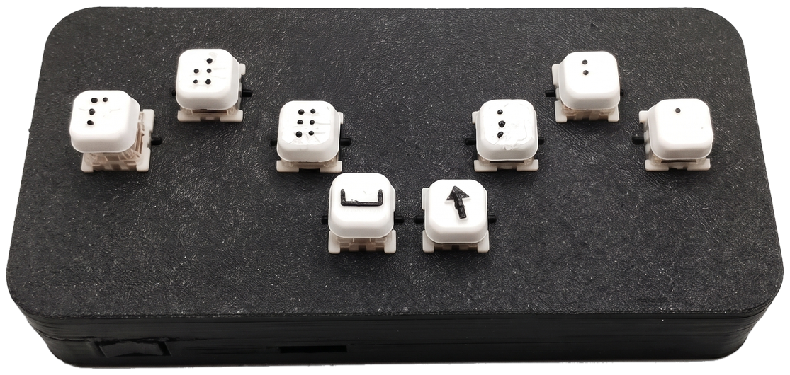
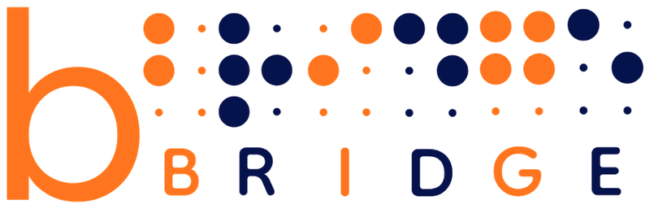
BrailleBridge is a low-cost, bilingual Braille writing system that lets blind and visually impaired students compose answers independently — on braille chords — while teachers see ordinary digital text appear instantly, in real time.
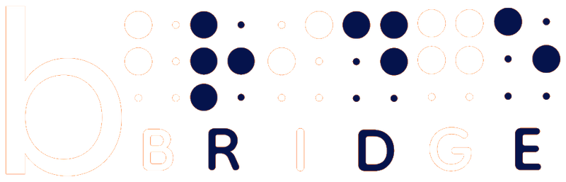
BrailleBridge does not replace Braille. It protects Braille as the student’s natural writing method — while removing the barrier between braille input and teacher-readable output.
01 — The Problem
For many blind students, writing during class means dictating every word to a sighted writer — sacrificing privacy, independence, speed, and accuracy.
Answers must be spoken aloud for a writer to record — nothing stays private.
Someone else controls the final written record — and how it is interpreted.
The student waits, repeats, and slows to the writer’s pace — not their own.
Technical terms, names, and Bangla phonetics are easily misheard or misspelled.
Embossed braille is unreadable to most sighted teachers — so work goes unchecked.
Mechanical braillers cost hundreds to thousands of dollars and are hard to repair locally.
Student dictates → writer types → meaning is lost
Student writes braille chords → digital text appears for the teacher
02 — The Solution
A six-dot braille keyboard, an ESP32 translator, and a web-based teacher console — a complete, affordable classroom system.
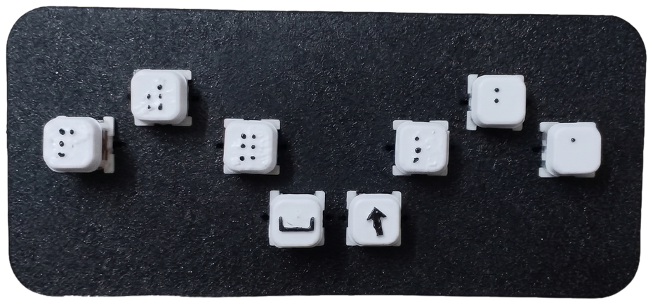
Presses familiar braille chords on tactile mechanical keys
6 dots + Space + ShiftReads the chord within 180 ms, encodes a 6-bit value, looks up the dictionary
English · Bangla · ShiftWorks with any phone, tablet, or PC — no proprietary receiver needed.
Readable digital output in real time — monitor, review, save, and assess.
Press. The student presses a braille chord on the six-dot keyboard.
Translate. The ESP32 collects keys within 180 ms, encodes the chord as a 6-bit value, and looks it up in the active dictionary.
Send. The character is transmitted over Bluetooth (student device) and USB Serial (teacher software) simultaneously.
Read. The teacher software displays, timestamps, saves, and organises every answer.
03 — Innovation & Novelty
BrailleBridge fuses a physical braille keyboard, bilingual translation, Bluetooth output, and web-based teacher software — within a single affordable system. No existing product delivers this combination.
Eight Outemu Red mechanical switches arranged in an intuitive two-hand chording arc give blind students unmistakable physical confirmation under every finger.
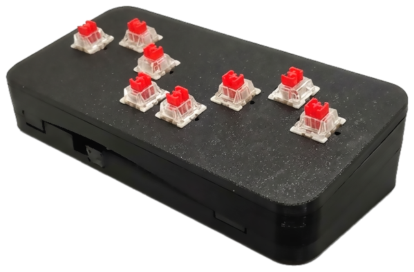
Physical Outemu switches with true mechanical feel — braille as it was meant to be written.
One hardware device, two dictionaries — with Shift-based modifiers for vowel signs, numbers, punctuation, and math.
Pairs with any modern device — no proprietary software or receiver required.
Streams to our custom Python BLE & Serial relay server, native PyQt6 desktop suite, Android app, and browser console.
~$5 microcontroller, ~$0.38 switches, and a custom 3D-printed enclosure.
Built for exams and tests: silent input, real-time monitoring, timestamped records.
| Solution | Strength | Limitation |
|---|---|---|
| Human writer | No equipment needed | Privacy loss, errors |
| Slate & stylus | Affordable, tactile | Slow; teacher cannot read |
| Perkins Brailler | Familiar method | Expensive, heavy, embossed only |
| Voice typing | Fast in quiet | Fails in noisy classrooms |
| Commercial digital | Advanced accessibility | Very expensive, hard to repair |
| Ordinary keyboard | Cheap, ubiquitous | No six-dot chording |
| BrailleBridge | Bilingual + teacher software | Prototype stage |
04 — Trusted By
Demonstrated alongside the Blind Education and Rehabilitation Development Organization (BERDO) — Bangladesh’s national-level OPD since 1991 — and tested at the Resource Centre for the Visually Impaired Students at the Dhaka University Central Library, co-sponsored by Sightsavers.
Founded by Md. Saidul Huq — who lost his eyesight at age six and went on to earn his BA and MA in Philosophy from the University of Dhaka — BERDO expands Braille literacy, accessible libraries, technical training, and employment for visually impaired people across Bangladesh.
BERDO’s published figures across reporting periods (not independently audited totals).
Organization, Recognition & Fellowship Marks

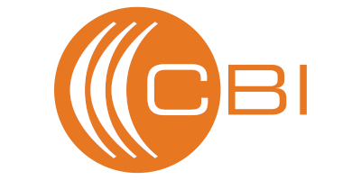
Institutional Partners: World Bank · Japan Embassy · Indian High Commission · Danish Embassy · CBM Global · Ministry of Social Welfare · Ministry of ICT · BRAC · Prime Bank PLC


Located inside the Dhaka University Central Library (by Kazi Nazrul Islam Ave, Dhaka) and established in 2007 with support from Sightsavers, the Resource Centre for the Visually Impaired Students is a dedicated study and assistive-technology facility providing specialized Braille materials, Perkins Braillers, screen-reader workstations, and academic support for visually impaired university students.
On-site evaluation conducted inside the Resource Centre for the Visually Impaired Students at Dhaka University Library.
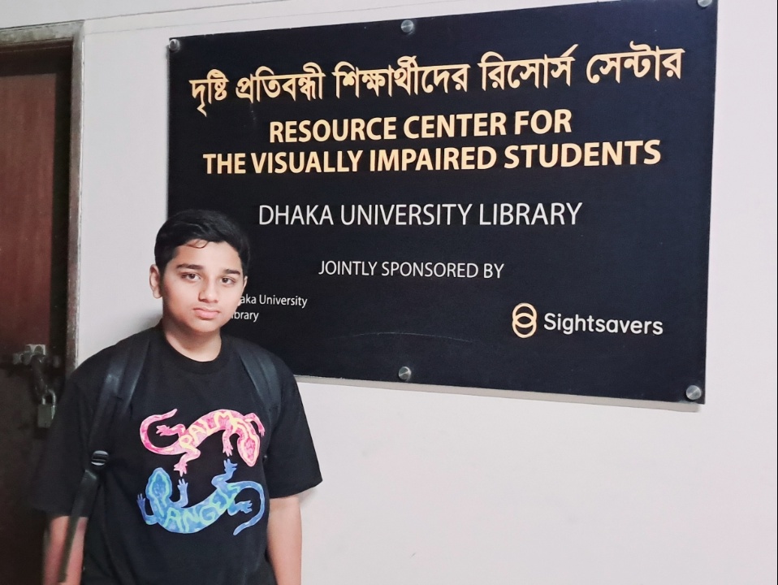
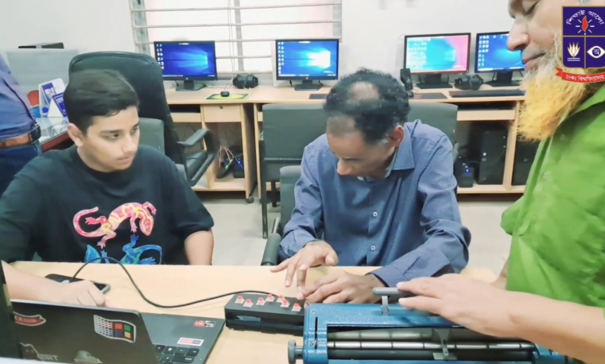
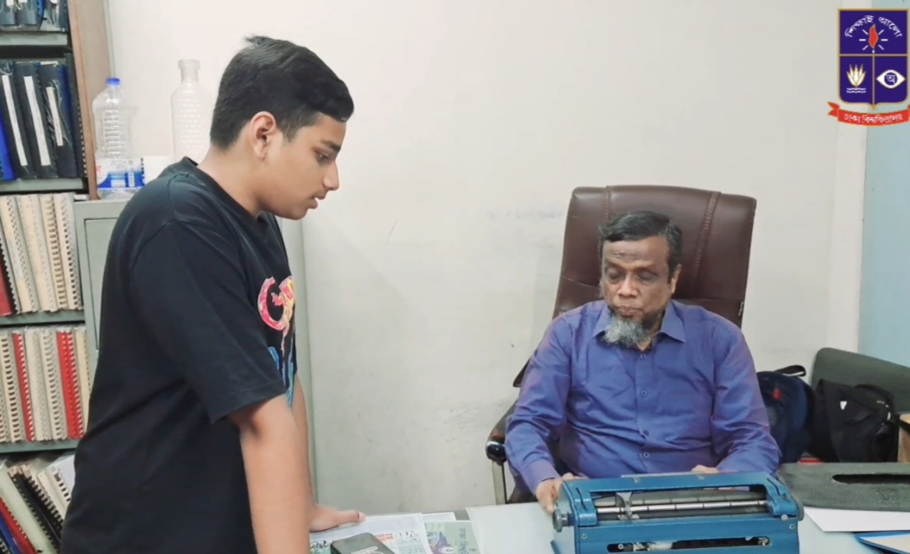
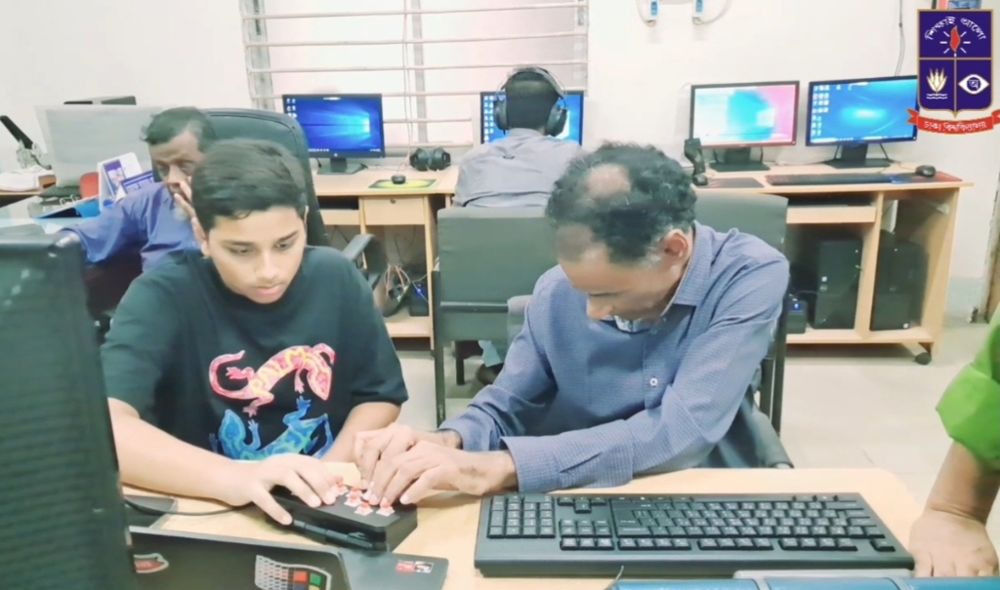
05 — Specifications & Hardware
Every component is standard, affordable, and locally replaceable — from the ESP32 to the mechanical switches to the 3D-printed enclosure.
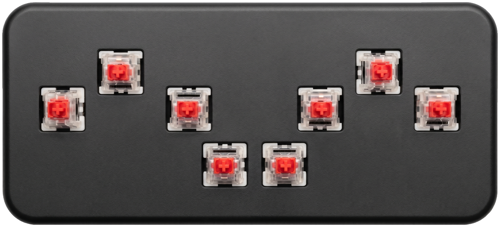
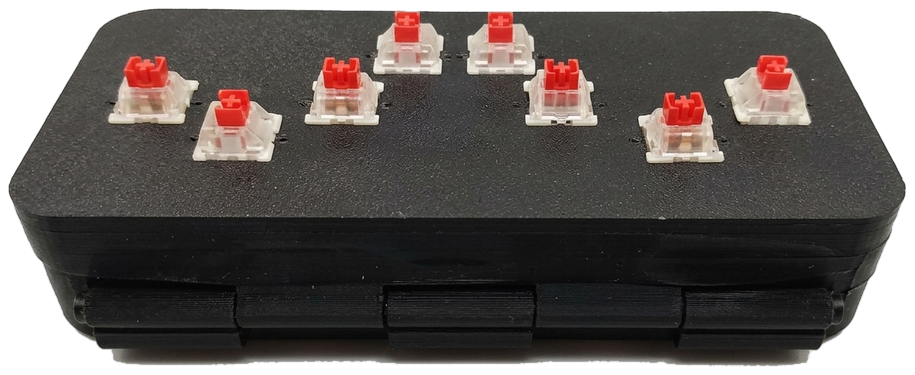
| Microcontroller | ESP32 Dev Module |
|---|---|
| Braille keys | 6 × Outemu Red mechanical switches |
| Additional keys | Space, Shift |
| Chord timing | Decode-on-release + 15 ms debounce (100+ WPM, live-tunable) |
| Output channels | Bluetooth HID + USB Serial |
| Languages | English, Bangla (Bharati Braille) |
| Shift functions | Caps, numbers, punctuation, math |
| Enclosure | Fusion 360 CAD, FDM 3D-printed |
| Teacher software | Custom Python BLE/Serial Server (PyQt6, Bleak, PySerial) + Android (Kotlin/Compose) & Web Console |
| Function | GPIO | Notes |
|---|---|---|
| Dot 1 | 14 | Top-left |
| Dot 2 | 12 | Middle-left |
| Dot 3 | 13 | Bottom-left |
| Dot 4 | 27 | Top-right |
| Dot 5 | 26 | Middle-right |
| Dot 6 | 25 | Bottom-right |
| Space | 33 | Dedicated space key |
| Shift | 32 | Modifier |
06 — Current Work in Progress Innovation
Moving BrailleBridge from a hand-wired classroom prototype to a commercially manufacturable product — starting with a custom PCB, refined tactile keycaps, and next-generation software.
Designed in KiCad to replace manual point-to-point jumper wiring with a clean,
manufacturable 2-layer FR-4 carrier board. It seats a 38-pin ESP32 DevKit on dual
1×19 sockets (exact 20.3 mm row spacing), routes all
eight mechanical switches (D1–D6, SPACE, SHIFT)
with paired signal-and-ground pins on J1, and introduces a socketed
5 V step-up/step-down (buck-boost) power module (J5,
reference Pololu S9V11F5, 3–16 V input), a 3-pin mode selector jumper
(JP1: 1-2 AA direct or 2-3 5V module), and
dual 1N5819 Schottky diodes (D2 for reverse-battery
protection into the module; D1 for USB back-feed isolation).
Built for global & local manufacturing flexibility: Adding a
plug-in buck-boost architecture with a hardware bypass jumper was a deliberate
engineering decision so schools, NGOs, and regional manufacturers in any country can
pick whichever battery chemistry or power supply is easiest, safest, and most
affordable locally — from plain 4×AA alkaline cells (jumper on
1-2, no module needed) to rechargeable NiMH packs, 2–3 cell packs,
protected Li-ion cells, 9 V batteries, or standard 3–16 V DC wall adapters
(jumper on 2-3) — without ever redesigning the PCB.
Iterating on custom-molded and resin/FDM keycap profiles built specifically for Outemu Red mechanical switches — tuning finger-dish curvature, raised Braille dot prominence, stem fit, and crisp acoustic feedback so long writing and exam sessions feel effortless.
Designing a faster, more reliable software stack and benchmarking core chording, Braille dictionary translation, and serial/BLE pipelines across languages like C++ and Rust for broad hardware compatibility and low-latency performance.
Platform Expansion
07 — Firmware Architecture
Written in C++ on the Arduino framework, the firmware turns six mechanical keys into a compact 6-bit value — then looks it up in a structured dictionary.
Each dot owns one bit in an 8-bit integer. A chord becomes a single 6-bit value — compact, constant-time comparison.
Replaces the legacy 180 ms timer: dots accumulate as long as any key is held and decode the instant all fingers lift, eliminating artificial lag for fast typists while preventing slow chords from splitting.
Translations live in a BrailleEntry lookup table. Adding a language? Append entries — no control-flow changes.
Hold dots 4+5+6 for 500 ms to toggle English ↔ Bangla. No hardware switch — just a software state flag.
Shift expands the range — uppercase, Bangla vowel signs, numbers 1–0, punctuation, and math symbols — without adding keys.
08 — Try It Yourself
Tap dots on the virtual pad and press Type (or Enter), or pair your physical BrailleBridge over Bluetooth LE or USB Serial to write directly in real time.
Quick tips: Click dots then hit Type character (or enable Auto-type). Press Dot 6 alone in English for Capital Sign (once = Cap, twice = Caps Lock). Toggle Shift + A–J for digits 1–0, or vowels in বাংলা for vowel signs (কার). Keyboard: 1–6 toggle dots, Enter types, Space spaces, Backspace deletes. For physical hardware: connect over Chrome / Edge via BLE (Nordic UART) or USB Serial (115200 baud).
09 — The Dictionaries
Because Bharati Braille maps cells to sounds, most Bangla chords coincide with their English counterparts. Only the active dictionary changes.
| Letter | Chord | Dots |
|---|---|---|
| A | 0b000001 | 1 |
| B | 0b000011 | 1,2 |
| C | 0b001001 | 1,4 |
| D | 0b011001 | 1,4,5 |
| E | 0b010001 | 1,5 |
| F | 0b001011 | 1,2,4 |
| G | 0b011011 | 1,2,4,5 |
| H | 0b010011 | 1,2,5 |
| I | 0b001010 | 2,4 |
| J | 0b011010 | 2,4,5 |
| Letter | Chord | Dots |
|---|---|---|
| K | 0b000101 | 1,3 |
| L | 0b000111 | 1,2,3 |
| M | 0b001101 | 1,3,4 |
| N | 0b011101 | 1,3,4,5 |
| O | 0b010101 | 1,3,5 |
| P | 0b001111 | 1,2,3,4 |
| Q | 0b011111 | 1–5 |
| R | 0b010111 | 1,2,3,5 |
| S | 0b001110 | 2,3,4 |
| T | 0b011110 | 2,3,4,5 |
| Letter | Chord | Dots |
|---|---|---|
| U | 0b100101 | 1,3,6 |
| V | 0b100111 | 1,2,3,6 |
| W | 0b111010 | 2,4,5,6 · exception |
| X | 0b101101 | 1,3,4,6 |
| Y | 0b111101 | 1,3,4,5,6 |
| Z | 0b101001 | 1,3,5,6 |
| Vowel | English | Dots | Binary |
|---|---|---|---|
| অ | O | 1 | 0b000001 |
| আ | — | 3,4,5 | 0b011100 |
| ই | I | 2,4 | 0b001010 |
| ঈ | — | 3,5 | 0b010100 |
| উ | U | 1,3,6 | 0b100101 |
| ঊ | — | 1,2,5,6 | 0b110011 |
| এ | E | 1,5 | 0b010001 |
| ঐ | — | 3,4 | 0b001100 |
| ও | O | 1,3,5 | 0b010101 |
| ঔ | — | 2,4,6 | 0b101010 |
| Letter | Dots | Binary |
|---|---|---|
| ক | 1,3 | 0b000101 |
| খ | 4,6 | 0b101000 |
| গ | 1,2,4,5 | 0b011011 |
| ঘ | 1,2,6 | 0b100011 |
| ঙ | 3,4,6 | 0b101100 |
| Letter | Dots | Binary |
|---|---|---|
| চ | 1,4 | 0b001001 |
| ছ | 1,6 | 0b100001 |
| জ | 2,4,5 | 0b011010 |
| ঝ | 3,5,6 | 0b110100 |
| ঞ | 2,5 | 0b010010 |
| Letter | Dots | Binary |
|---|---|---|
| ট | 2,3,4,5,6 | 0b111110 |
| ঠ | 2,4,5,6 | 0b110110 |
| ড | 1,2,4,6 | 0b101011 |
| ঢ | All 6 | 0b111111 |
| ণ | 3,4,5,6 | 0b111100 |
| Letter | Dots | Binary |
|---|---|---|
| ত | 2,3,4,5 | 0b011110 |
| থ | 1,4,5,6 | 0b111001 |
| দ | 1,4,5 | 0b011001 |
| ধ | 2,3,4,6 | 0b101110 |
| ন | 1,3,4,5 | 0b011101 |
| Letter | Dots | Binary |
|---|---|---|
| প | 1,2,3,4 | 0b001111 |
| ফ | 2,3,5 | 0b010110 |
| ব | 1,2 | 0b000011 |
| ভ | 4,5 | 0b011000 |
| ম | 1,3,4 | 0b001101 |
| Letter | Dots | Binary |
|---|---|---|
| য | 1,3,4,5,6 | 0b111101 |
| র | 1,2,3,5 | 0b010111 |
| ল | 1,2,3 | 0b000111 |
| শ | 1,4,6 | 0b101001 |
| ষ | 1,2,3,4,6 | 0b101111 |
| স | 2,3,4 | 0b001110 |
| হ | 1,2,5 | 0b010011 |
| Mark | Name | Dots | Binary |
|---|---|---|---|
| ্ | Halant (virama) | 4 | 0b001000 |
| ং | Anusvara | 5,6 | 0b110000 |
| ঃ | Visarga | 6 | 0b100000 |
| ঁ | Candrabindu | 5 | 0b010000 |
| Shift + | Number | Dots |
|---|---|---|
| A | 1 | 1 |
| B | 2 | 1,2 |
| C | 3 | 1,4 |
| D | 4 | 1,4,5 |
| E | 5 | 1,5 |
| F | 6 | 1,2,4 |
| G | 7 | 1,2,4,5 |
| H | 8 | 1,2,5 |
| I | 9 | 2,4 |
| J | 0 | 2,4,5 |
| Symbol | Dots |
|---|---|
| , | 2 |
| ; | 2,3 |
| : | 2,5 |
| . | 2,5,6 |
| ? | 2,3,6 |
| ! | 2,3,5 |
| Symbol | Dots |
|---|---|
| + | 2,3,5 |
| − | 3,6 |
| × | 2,3,6 |
| ÷ | 3,4 |
| = | 2,3,5,6 |
10 — Companion Software
Powered by a custom multi-threaded Python Bluetooth Low Energy (Bleak + WinRT) & USB Serial (PySerial) relay server inside a native PyQt6 desktop suite — alongside our Kotlin & Jetpack Compose Android BLE proxy app and Web Serial console.
11 — Engineering Innovations
Replaces the fixed 180 ms window with 15 ms debounce + release commit — supporting 40–70 WPM sustained and 100+ WPM peak speeds.
Six keys collapse into one 6-bit integer — compact, constant-time comparison.
A new language is just new array entries — no control-flow changes.
Bluetooth for the student, USB Serial for the teacher — simultaneous and independent.
A boolean variable switches English and Bangla — no hardware switch.
Shift expands caps, numbers, and symbols without adding physical keys.
Switches, ESP32, enclosure, and software repair or upgrade independently.
Nothing to install — it runs in the browser and updates on refresh.
A 500 ms interval rebuilds every feed from stored data — no character is ever lost.
A single bottom compartment and hinged top shell mean any teacher or local technician can swap a switch or inspect wiring without specialized tools.
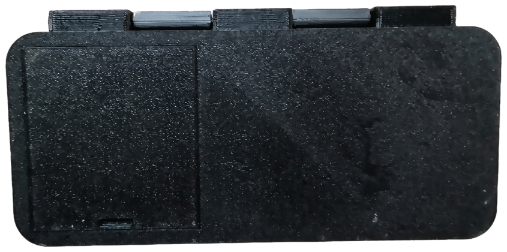
12 — Affordability
A fraction of mechanical braillers or commercial digital systems — with every component replaceable for a few dollars.
| Component | Qty | Cost (USD) |
|---|---|---|
| ESP32 Dev Module | 1 | $5.00 |
| Outemu Red switch | 8 | $3.00 |
| Keycaps (3D-printed) | 8 | $1.00 |
| Perfboard | 1 | $0.80 |
| PLA filament (enclosure) | 30 g | $1.20 |
| M3 screws, wire, solder | — | $0.70 |
| Total | ~$11.70 |
a complete device, including tools & overhead
11 — Conclusion
BrailleBridge bridges four gaps: between tactile writing and readable text, between English and Bangla, between independent composition and teacher assessment, and between the high cost of assistive technology and limited school budgets.
Creator & Developer
Hardware Architect, ESP32 Firmware & Software Developer · Solez-ai
Designed and engineered BrailleBridge end-to-end — from Fusion 360 3D-printed enclosure CAD, ESP32 C++ BLE/Serial firmware, and Bharati Braille translation dictionaries to the desktop, mobile, and web consoles.